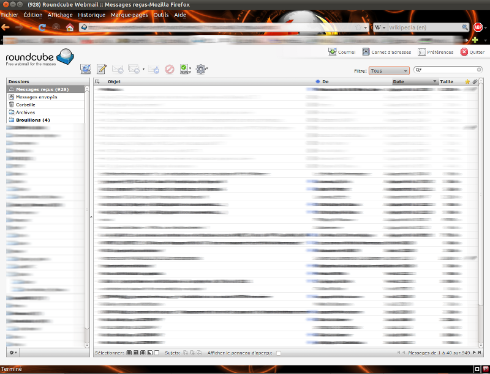

Le mail sous OpenBSD
Sommaire
Pour le service SMTP, c'est là
Pour le service IMAP, c'est là
Envoi de mails
Envois depuis la machine locale
Rien à faire , c'est prévu par défaut :
netstat -na |grep 25 tcp 0 0 127.0.0.1.25 *.* LISTEN tcp6 0 0 ::1.25 *.* LISTEN
Mail en PHP sous un Apache chrooté
- [[1]]
pkg_add mini_sendmail-chroot pkg_add mini_sendmail mkdir /var/www/tmp chown www.www /var/www/tmp mkdir /var/www/bin cp /bin/sh /var/www/bin/sh cd /var/www/bin/ ln -s mini_sendmail sendmail mkdir /var/www/etc cp /etc/resolv.conf /var/www/etc/resolv.conf perl -pi -e 's/;sendmail_path =/ sendmail_path = "\/bin\/sendmail -t"/' /var/www/conf/php.ini mkdir -p /var/www/usr/lib mkdir -p /var/www/usr/libexec apachectl stop apachectl start
Faites un test en créant un fichier php dans l'arbo web:
<?php
mail("moi@mondomaine","obj","message");
?>
Service de messagerie
Les tests
RoundCube: Le Webmail qui vous va bien
Install
pkg_add roundcubemail ln -fs /var/www/conf/php5.sample/mbstring.ini /var/www/conf/php5/mbstring.ini ln -s /var/www/conf/modules.sample/roundcubemail.conf /var/www/conf/modules cd /var/www/ ln -s ../roundcubemail /var/www/htdocs pkg_add pecl-fileinfo ln -fs /var/www/conf/php5.sample/fileinfo.ini /var/www/conf/php5/fileinfo.ini apachectl stop apachectl start mysql CREATE DATABASE roundcubemail /*!40101 CHARACTER SET utf8 COLLATE utf8_general_ci */; GRANT ALL PRIVILEGES ON roundcubemail.* TO roundcube@localhost IDENTIFIED BY 'password'; quit mysql roundcubemail < /var/www/roundcubemail/SQL/mysql.initial.sql
afin de ne pas se faire trouer le serveur durant la phase d'install, il peut être utile de coller un .htaccess dans /var/www/roundcubemail/installer
order deny,allow deny from all allow from @MONIP <limit GET> #require valid-user </limit>
- Changez $rcmail_config['enable_installer'] = à true dans /var/www/roundcubemail/config/main.inc.php
- Un petit tour sur http://Mon_serveur/roundcubemail/installer
- Changez le mot de passe (pass) dans le fichier /var/www/htdocs/roundcubemail/config/db.inc.php
- Installez de quoi faire du mail depuis Apache
- Lorsque l'installateur vous dit que tout est OK:
- Remettez le enable_installer à false
- Supprimez le répertoire installer (ou copiez -le à un endroit inaccessible)
- C'est terminé
Plus d'infos : /var/www/roundcubemail/INSTALL..
Au final, ça donne : 
{kind=link}
Migration Carnet d'adresses
On a toujours quelqu'un qui a eu le souci avant vous. En plus, comme ça, on apprend Python !
XXX contacts importés avec succès, YYY entrées existantes ignorées:
On peut écraser le carnet de Roundcube pour remettre les choses à plat, après test.
Migration de compte
Avec tout ça, vous allez vouloir migrer vos comptes de POP3 à IMAPS..
Avec ThunderBird
Très facile !
- Vous vous créez un nouveau compte IMAPS, que vous configurez en demandant la synchronisation des mails avec le serveur.
- Vous relevez vos messages et validez la configuration du client.
- Vous déplacez (drag and drop) un dossier depuis le compte POP3, vers le compte IMAPS.
Attention, c'est très long, même en Ethernet (Environ 3 min pour 1000 emails). Si vous comptez synchroniser sur un serveur ADSL distant, comptez plusieurs nuits pour la synchro initiale...
- Pour les filtres, utilisez ça
- Outils/Modules complémentaires/installer
- Outils/Filtres de massages/Exporter
- Outils/Import de filtres
Comme vous allez vous retrouver avec des flopées de messages en double, je vous conseille cet outil qui supprime les doublons..
Si maintenant, vous avez perdus quelques mails ou dossiers dans la bataille :
- Fermez TBird
- Récupérez un backup des dossiers ou mails.
- Copiez ces mails dans /home/User/.Thunderbird/XXXXX.default/Mail/Local Folders
- Relancez TBird et déplacez ces mails dans les nouveaux dossiers Imaps, la synchro se fera directement.